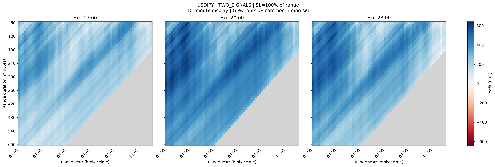

FX pairs in the original study
Seven JPY-linked pairs and 21 non-JPY pairs. Group means give each pair equal weight.
Case study · Historical FX research
Do JPY-linked currency pairs show broader and more locally consistent historical breakout profitability than other pairs?
Seven JPY-linked pairs and 21 non-JPY pairs. Group means give each pair equal weight.
From 318,136 optimization rows across the original 30-minute grid and both breakout modes.
A separate five-minute-grid comparison of exits at 17:00, 20:00 and 23:00 on the same history.
What the analysis shows
The original study finds a higher mean share of profitable configurations among JPY-linked pairs. The comparison gives each pair equal weight, and performance varies substantially between individual pairs.
| Comparison | JPY | Non-JPY |
|---|---|---|
| Profitable-setting share: original grid, both modes | 54.15% | 5.16% |
| Neighbourhood-supported share: two-signal mode | 44.55% | 1.95% |
Neighbourhood support requires the setting and all six neighbours to be profitable. Each neighbour changes one timing input by ±30 minutes, holding the others fixed. This comparison uses 3,564 interior settings per pair. Excluding USDJPY and CADJPY leaves a JPY mean supported share of 27.53%.
The additional USDJPY scans use five-minute range-start and duration steps in two-signal mode. Matching by start and duration produces a common set of 10,927 timing-valid settings across three exits. These scans are analysed separately from the original 28-pair dataset.
| Exit | Profit | Recovery factor | Profit factor | Raw R |
|---|---|---|---|---|
| 17:00 | €234.45 | 3.0364 | 1.1453 | 0.9449 |
| 20:00 | €406.39 | 4.4153 | 1.1774 | 0.9594 |
| 23:00 | €323.22 | 3.7358 | 1.1283 | 0.9660 |
The 20:00 exit has the highest median profit, recovery factor and profit factor among these three exits; 23:00 has the highest median R. This is a comparison within the selected historical sample. Changing the exit also changes the entry cutoff and available entry opportunities.

The heatmaps display every second row and column of the five-minute grid, giving ten-minute display spacing. There is no averaging or interpolation. Statistics and colour limits use the full matched five-minute data; times follow the broker clock.
Method and validation
I parsed and validated MT5 optimization XML exports in Python, reconciled the results in MySQL, explored parameter behaviour with pandas and visualizations, and assembled the findings in Power BI and DAX.
Check row counts, settings and eligibility per pair. An eligible original configuration has at least 120 scheduled minutes between range end and exit, and at least one trade.
Reconcile Python and MySQL controls, separate the original and finer studies, and distinguish all-eligible coverage from summaries conditional on profitable configurations.
Compare pair groups and neighbouring timing settings. For the fine USDJPY extension, join scans by range start and duration rather than optimization pass ID, and use shared colour scales.
Combine MySQL reporting, CSV snapshots and Python figures in a 14-page Power BI report. Check the exported tables, figures and captions against the saved analysis.
Study settings: date inputs 1 May 2018–31 August 2026; CapitalPointTrading-MT5-4 server; 1-minute OHLC modelling; EUR account basis. Scheduled times use broker time. Excel inspection was part of the work.
The reporting output
Report v1 combines the original 28-pair study and a separately labelled USDJPY extension. Open the complete PDF or jump to a section below.
Research question, experiment settings, metric definitions and original data controls.
Open at page 1Pair overview, JPY comparison, currency groups and neighbourhood support.
Open at page 4Full valid 23:00 fine-grid maps for profit, recovery factor, profit factor and R.
Open at page 8Common-set fine-grid comparisons, the four-metric summary, findings and future work.
Open at page 12Scope and interpretation
Further work includes freezing selection rules, checking unseen dates and alternative trading conditions, and exploring additional exits, stop-loss/take-profit settings and account currency.